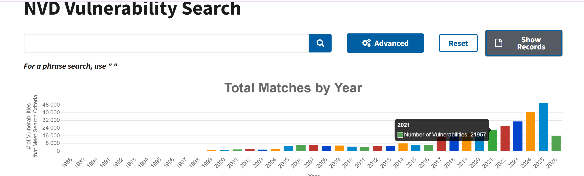
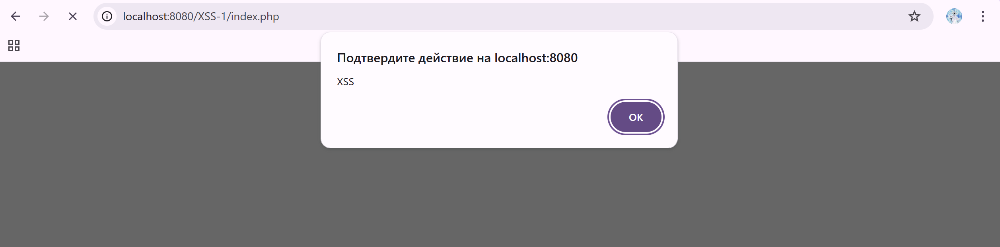

Источники:
https://nvd.nist.gov/vuln/detail/CVE-2021-29447
https://symfony.com/doc/current/templates.html
Описание уязвимости:
Согласно описанию в NVD, уязвимость связана с некорректной обработкой пользовательского ввода, что может привести к выполнению произвольного JavaScript-кода (XSS).
Назначение компонента:
Symfony - PHP-фреймворк для разработки веб-приложений.
Компонент Twig используется для шаблонизации, то есть генерации HTML-страниц и отображения данных пользователю.
Причина уязвимости: отсутствие корректного экранирования пользовательского ввода при выводе в HTML.
Последствия:
Источники:
https://nvd.nist.gov/vuln/detail/CVE-2021-24307
https://wordpress.org/plugins/responsive-menu/
Описание уязвимости:
Согласно NVD, уязвимость XSS возникает из-за недостаточной фильтрации входных данных, что позволяет внедрять вредоносный JavaScript-код.
Назначение компонента:
Плагин WordPress Responsive Menu используется для создания адаптивного меню сайта и улучшения пользовательской навигации.
Причина уязвимости: отсутствие фильтрации и экранирования пользовательского ввода.
Последствия:
Для определения количества уязвимостей был выполнен поиск в базе NVD с фильтрацией по году. Согласно результатам поиска, в 2021 году было зарегистрировано 21957 уязвимостей.

Источник: https://nvd.nist.gov/vuln/search
Запустила докер образ. Тыкнула на XSS-1. Появилось окошко comment и рядом с ним кнопка сохранить.
Сначала я ввела следующий код: <script>alert('XSS')</script>
После нажатия кнопки "Save Data" и обновления страницы появилось всплывающее окно с текстом "XSS". Это означает, что браузер выполнил JavaScript-код.

Таким образом, ввод пользователя никак не фильтруется и вставляется в HTML как есть.
Был реализован хранимый XSS, так как вредоносный код сохраняется на сервере и выполняется при загрузке страницы.
Приложение не проверяет и не экранирует введённые данные. В результате пользователь может вставить HTML или JavaScript, который потом выполнится у других пользователей.
Возможные последствия:
Чтобы избежать такой уязвимости, нужно:
<, >, ", ')